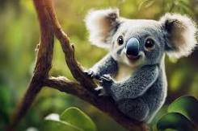
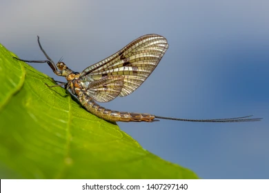
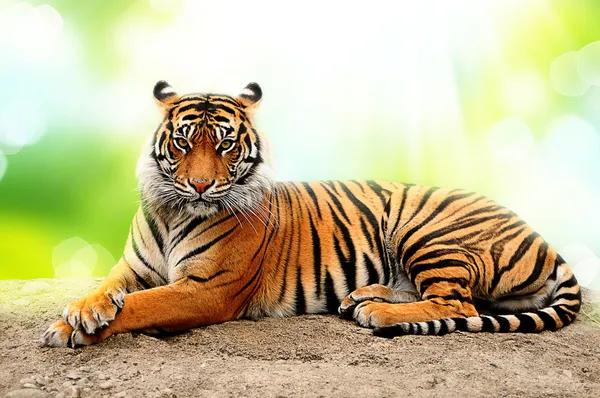

My Best Top 5 Movies
I don't really watch Movies though
I want to really list out some things over here.
- Cat Family.
A drawing of a Cat
- Tasmanian Devil;

- Lions

- kaola;
- They are small in size.
- They likely sleep all day long.
- They are friend animals;
- They are friendly because they look calm and they have soft hairs.
- They mostly spend their lives on trees.

I would love to discuss about some other animals here:
- Pufferfish;

It is a very beautiful image and the organism itself also has stingers on its body,
which makes it unedible by the rest of the fishes in the water body. It is also not
very big in size although it might look fat.
- Mayfly;

- It belongs to the order 'Ephemeroptera'.
- It can live for about 6months to 1year in the larvae stage
- Once it beomes an adult, it does not live up to 24hours before it dies.
- its primary aim is to reproduce onces it emerges as an adult.
- it is a tailed-insect i.e It has quite a long tail.
- Tripod Fish;
- I don't really have much to say this particular fish cause it looks unimaginary at
first sight and it looks like it has three-legs.
- It also looks shiny, it may have some interesting properties which makes it unique
and special;
- Maybe presence of oil in the body.
- Uropygial Gland;
- Squalene and Wax esters e.t.c.
- The fish looks like it would be so sweet to consume.

- Tiger

- Lion
I love animals
I LIKE BEING PAMPERED
A brief history of time by Stephen Hawking has sold over 10 million copiies worldwide.
- Sashimi
- Sliced raw fish that is sliced with condiments such as shredded daikon raddish or ginger roots.
- Redemancy
- It is the act of loving one and the person also reciprocrates the love back.
The Setae is an hydrophobic hair that prevents water encroachment.